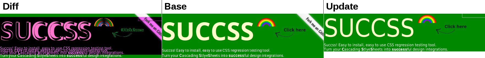

Grab it:
npm install -g succss
Describe your website CSS:
// data.js
Succss.pages = {
'home': {
url:'succss.ifzenelse.net',
directory:'screenshots/dir',
// captures: { 'name' : 'CSS selector' }
captures: {
// leave an empty value if selector == name
'header':'',
'dynamic-text':'body #header-text > #static-line + span',
},
},
'another-page': {
...
}
};
Succss.viewports = {
// './screenshots/dir/home--header--1366x768.png' file
// './screenshots/dir/home--dynamic-text--1366x768.png' file
'default': {
width: 1366,
height: 768
},
// './screenshots/dir/home--header--640x480.png' file
// './screenshots/dir/home--dynamic-text--640x480.png' file
'mobile-landscape': {
width: 640,
height: 480
},
...
}
Succss can do more, such as interactions with the browser before capture.
Later, you can also read
advanced Configuration.
Take reference screenshots:
succss add data.js
For advanced usage, the succss command has several options such as pages, captures and viewports
filters.
Compare reference screenshots to updates:
succss check data.js
Succss is bundled with imagediff (default) and ResembleJS for comparisons. Captures validations can be fully
customized.
See differences or success:

This image extracted from selftests displays how differences are highlighted by
Imagediff. Take a look at
Succss source code if you know javascript.
Installation Troubleshooting
Requirements
There is only two simple requirements to get Succss and to run it.
- 1. how to get Succss ? npm
- 2. how to run it ? python
You could checkout the Succss git repository, symlink it's binary to your system and have CasperJS installed separately, but well... who would do that ?
npm
Npmjs is a neat package manager for nodejs and other javascript tools and libraries.
Most Linux distributions have a prepackaged npm binary. Follow these instructions if you need help.
On Mac OSX, do:
brew install node
Do not forget the important part (run it as root):
npm -g install succss
Actually, if you are a developer, you can checkout the most recent succss branch and symlink it with the "npm link" command.
Python
Python is bundled with Mac OSX and a lot of Linux distributions too. To verify if it is already installed, open your favorite shell and type this:
python --version
Succss has been tested with python versions 2.7.8 and 3.4.1, it should work with anything in between.
Windows
Argh... Windows. I used to play video games on Windows, I mean, I still do from time to time. Anyway, Windows is not officially supported but theoretically it could work.
First, try to get npm (from nodejs), python and casperjs working on Windows, then Succss, you may have it !
Advanced Configuration
From the example on the frontpage, you should already know that the succss commandline tool takes one javascript file as argument for capturing base screenshots and checking updates for differences with base.
// From data.js (name it what you want)
/* Mandatory */
Succss.pages = {...}
/* Optionnally: */
Succss.viewports = {...}
Succss.setFileName = function(capture) {...}
Succss.callback = function(capture) {...}
Succss.diff = function(imgBase, imgCheck, capture){...}
Succss will read the static properties and methods you provide. The callback and diff hook functions are part of the
custom validation facility.
Succss.pages
Succss main configuration is simple: keyed objects representing webpages with captures as 'name' : 'selector'.
Succss.pages = {
'homepage': {
url:'succss.ifzenelse.net/configuration?bgColor=673',
directory:'relative/screenshots/',
captures: {
'home':'body',
'header':'',
'name-it':'div > #iam a.css #selector'
}
}
}
Be careful not to write reserved ($ & + , / : ; = ? @) or unsafe (" < > # % { } | \ ^ ~ [ ] `) characters in your captures names, unless you write a custom
setFileName function to get around these.
Beware that taking body screenshots is mostly a bad practice: while it's quick to do, it is innefficient and error prone... Which is good to note in this guide.
- url: Protocol is optionnaly specified, default is "http://" . The website for which you will take screenshots.
- directory: The directory where screenshots will be stored, it can be absolute or relative to your current console path.
- captures: If the selector value is not specified, the name will be used ('header' : '' selector is header, that's how DRY it is)
Before Capture
You may need to automate user interactions before capture. Then, you will have to write an object as the capture key's value, this is where is placed the before function.
This way, you can use any suite of action supported by CasperJS, notably click, fill and wait.
// Example from selftests/data.js (@see source code)
Succss.pages = {
...
captures: {
'header': {
// Selectors can have a hook callback "before" capture.
'before': function() {
this.click('#logo-image');
console.log('... Waiting for color squares reinitialization');
this.wait(900, function() {
console.log('Done!');
});
}
},
The 'header' key above is actually the capture's name. The selector, while not explicitly set, is deducted from the name. See below for another example with a selector set.
Under the hood, capture 'before' function is made with the awesome "call" javascript method, passing the live casper browser instance to your custom capture function. Have a look at the source, it's clean !
We can interact further than user input by modifying the DOM. When your interaction alters the Document Object Model, you need to wrap your code inside a casper evaluate() function.
// Example from selftests/data.js (@see source)
Succss.pages = {
...
captures: {
'header-mod': {
'selector': 'header',
before: function() {
this.evaluate(function() {
var header = document.getElementsByTagName('header');
var clickImage = document.getElementById('click-here');
header[0].removeChild(clickImage);
});
}
The evaluate function acts on behalf of the browser's javascript, whereas the code outside is user input.
You can't call console.log from an evaluate function. Nonetheless, you can call the "window.callPhantom()" function with either a string, or {dump:object} (which in turn will call
utils.dump on your object).
before: function(before) {
before.header();
before['header-mod']();
}
The reused before method name will be one of a previous capture on the same page. Be careful not to loop callbacks with this...
Hide elements
Depending on your content, frequently updated elements or overlapping areas may interfer with your testing. The 'hidden' capture property is used to manage updated content and moving elements issues.
// Example from selftests/data.js (@see source)
Succss.pages = {
...
captures: {
'hiddenElements': {
'url':SuccssDataCommon.url +'/usecases',
...
'captures': {
'navigation-menu': {
selector: '#more-infos',
hidden: '#colors div, #colors a'
}
}
}
}
...
Succss will pass the 'hidden' value to the document.querySelectorAll function, then applying 'hidden' to matching elements style.visibility.
Succss.viewports
Any number of viewports objects with height and width properties, keyed by viewport names of your choice.
Succss.viewports = {
'wide':
{
'width':1920,
'height':1200
},
'mobile-landscape':
{
'width':640,
'height':480
}
}
Pages and captures can be filtered, likewise viewports have their
--viewports option. If you don't filter viewports, captures will be made for the whole list.
Succss.setFileName
You can choose the logic behind file naming done by a configuration file, just override the Succss.setFileName function.
Succss.setFileName = function(capture) {
// Will output something along these lines: "homepage--header--viewportname.png"
return capture.page.name + '--' + capture.name + '--' + capture.viewport.name + '.png';
};
Following properties are available through the capture Object parameter:
- capture: name, selector, directory, callback
- capture.page: name, url, directory
- capture.viewport: name, width, height
- capture.options: any Succss.options or one given to the commandline
- capture.count: planned, remaining, failures, startTime
Properties of capture.count, namely planned and remaining captures number, current failures number and the execution start timestamp are part of the
custom validation facility.
Default configuration options
Above, we have seen how to take advantage of Succss advanced configuration, it doesn't mean you have to !
The following small, yet useful code snippet, outputs full pages screenshots.
// "condensed-conf.js"
Succss.pages = {
// Will output: './screenshots/home--body--1366x768.png'
'home': { url:'succss.ifzenelse.net' },
// Will output: './screenshots/home--body--1366x768.png'
'configuration': { url:'succss.ifzenelse.net/configuration?bgColor=088' }
...
}
Obviously, webpage url is mandatory while the directory and selector default to "./screenshots" and "body" respectively. Note that default viewport is 1366x768.
From the previous snippet, the following default configuration is assumed:
Succss.pages = {
'home': {
url:'succss.ifzenelse.net',
directory:'./screenshots',
captures: { 'body':'' }
},
'configuration': {
url:'succss.ifzenelse.net/configuration?bgColor=088',
directory:'./screenshots',
captures: { 'body':'' }
}
}
Succss.viewports = {
'default': { 'width':1366,'height':768 }
}
Succss.setFileName = function(capture) {
return captureState.page.name + '--' + captureState.name + '--' + captureState.viewport.width + 'x' + captureState.viewport.height + '.png';
}
Variables
DRY (Do not Repeat Yourself). You can avoid repetition with variables.
e.g.
var baseUrl = 'succss.ifzenelse.net';
Succss.pages = {
'home': { url:baseUrl },
'page1': { url:baseUrl + '/installation' },
'page2': { url:baseUrl + '/configuration' },
'pageN': { url:baseUrl + '/customize' }
}
Reminder: the Succss configuration is a javascript file.
The source property
The way Javascript assign objects is by reference. It means modifications done on a copied object will get reflected on the original object.
To work around this, Succss.pages offers a 'source' attribute to extend another page's properties. For instance:
Succss.pages = {
'installation': {
'url': SuccssDataCommon.url+'/installation',
'directory':SuccssDataCommon.baseDirectory+'/installation',
captures: {
'header':''
},
},
'configuration': {
'url': SuccssDataCommon.url+'/configuration',
'directory':SuccssDataCommon.baseDirectory+'/configuration',
'source': 'installation'
}
}
The 'configuration' page above will change the url and directory but keeps the installation 'captures' properties. You could also share the same directory on both.
SuccssDataCommon is a set of convenient values and functions used for Succss internal testing. Check the
selftests/data.class.js from the source.
Conclusion
Succss configuration is really flexible and powerful, yet simple.
If you want more examples, skip to the source to read the configuration files inside the selftests/ directory.
Succss From The CLI (Command Line Interface)
Succss binary is a python script, it will launch casperjs with the succss-bridge.js test file. Then, command-line options are read
and your javascript configuration file is parsed by the succss.js PhantomJS module containing the core Succss logic.
Read more below for the really interesting stuff.
Add references
First you will need to write a javascript configuration file, describing pages and selectors on which you want to do the regression testing.
succss add your-conf.js
Your reference screenshots will be used for searching differences in updates.
Check updates
After local code updates or by continuous integration, you can launch the check command on a configuration file for which reference screenshots have been taken.
succss check your-file.js
You may have a configuration file for adding and another for checking, if both have compatible pages and captures. Just one file is good for most cases.
Filters
Pages, captures and viewports from the configuration file can be filtered for any succss run.
succss add your-conf.js --pages=p1,p2,p3 --captures=c1,c2 --viewports=v1
Filters are applicable on the check command as well.
Compare to single page and/or viewport
It is possible to compare multiple pages and/or viewports to one page and/or viewport. It is especially useful to test for regressions across viewports with similar rendering or for decorators patterns used to display similar elements across pages.
The following example will do four checks: p2-v1,p2-v2,p3-v1,p3-v2 against the p1-v3 configuration.
succss check your-conf.js --pages=p2,p3 --compareToPage=p1 --viewports=v1,v2 --compareToViewport=v3
Note that your pages captures must be similar to those in the compared to page and added beforehand (p1-v3 in the above). You can quickly duplicate captures with the
source property.
Engine
The default browser engine is the PhantomJS headless browser, which is using Webkit (the chrome and safari engine). To render pages with Gecko, first you must have SlimerJS installed on your computer, then run:
succss add your-conf.js --engine=slimerjs
succss check your-conf.js --engine=slimerjs
Unlike PhantomJS, SlimerJS is not a headless browser (new desktop windows are created to take screenshots). It will sometimes be more accurate when it comes to display ressources loaded on AJAX requests as well as fonts.
The
lightweight version of SlimerJS can take advantage of your installed Firefox binary.
[Exception... "Component returned failure code: 0x80520006 (NS_ERROR_FILE_TARGET_DOES_NOT_EXIST) [nsIFile.isFile]" nsresult: "0x80520006 (NS_ERROR_FILE_TARGET_DOES_NOT_EXIST)" location: "JS frame :: resource://slimerjs/addon-sdk/toolkit/loader.js -> resource://slimerjs/addon-sdk/sdk/io/file.js :: isFile :: line 116" data: no]
Run 'succss check --pages=,special --engine=slimerjs' instead of 'succss check --pages=special --engine=slimerjs'.
Diffing methods
The default diff image is made with js-imagediff.
You are not limited to just imagediff, or even a single diff method for one succss check run. A ResembleJS implementation is bundled with succss, to enable it, just do:
succss check your-conf.js --resemble
The above will use both ResembleJS and Imagediff, each method will output its own diff image in ./resemble and ./imagediff, respectively.
To disable imagediff, you would do:
succss check your-conf.js --imagediff=false --resemble
In practice, the prefered way to set the diffing method is with the
Succss.options object (more on that below).
Additionnal casperjs options
CasperJs options are comaptible with Succss, from the commandline or in the Succss.options object.
For instance, exitOnError and waitTimeout are very useful, commonly used options you may need.
succss check your-conf.js --exitOnError=false
succss add your-conf.js --waitTimeout=10000
Single string value options are well suited for the commandline, otherwise (for objects like pageSettings and clientScripts) you can override default options from Succss.options object in the configuration file.
When an option is given with no value, true is assumed (see --resemble above).
Succss.options
Commandline options can be avoided by setting "default" options (commandline options take precedence) via the Succss.options object. Beware that the --engine option can not be set in Succss.options.
Your default options may look like this:
// your-conf.js
...
Succss.options = {
'resemble':true,
'imagediff':false,
'diffQuality':100,
'exitOnError':false,
'pages':'installation,advanced-selectors',
'pageSettings': {
'loadImages':false,
'userName':'login',
'password':'*xYz*123'
}
}
The username and password from the pageSettings option are used for htaccess authentication.
Succss default options are:
// This is actually Succss.allOptions, but you won't have to bother with allOptions.
Succss.options = {
imgType:'png',
imgQuality:'80',
diff:true,
imagediff:true,
resemble:false,
diffQuality:'80',
tolerancePixels:'0',
diffLightness:100
};
When the diff option is set to true, Succss will search for the user's custom
Succss.diff function.
This snippet is extracted from succss-bridge.js
Screenshots settings
Captures file type and compression can be set with the following settings:
- imgType: either jpeg or png. Default is 'png'
- imgQuality: a number between 0 (worst) and 100 (best, heavier). Default is 80.
Diffing also has its settings:
- diffQuality: a number between 0 (worst) and 100 (best, heavier). Default is 80.
- tolerancePixels: the tolerance pixels for the imagediff algorithm.
- diffLightness: the added color value (lightness) in imagediff differences, up to 255. Default is 100.
To tweak ResembleJS settings, you need to implement your own Succss diff function. It's not that hard, you may read the related
documentation.
Check against static files
You can choose not to check against live screenshots updates, but to use a custom location that mirrors the reference directory tree. Just use the checkDir option.
succss check your-conf.js --checkDir=custom-path
Keep in mind that the checkDir directory tree needs to match directories specified in your-conf.js
The LogLevel and verbose options
Casperjs verbose and logLevel options provides the ability to display additionnal messages in the console.
succss check your-conf.js --verbose --logLevel=info
[info] [phantom] [SucCSS] Options: --imgType=png, --imgQuality=80, --diff=true, --imagediff=false, --resemble=false, --diffQuality=100, --tolerancePixels=0, --exitOnError=false, --pages=installation, --casper-path=/lib/node_modules/casperjs, --cli=true, --dataFile=/home/zen/Projets/Informatique/OpenSource/github/Succss/selftests/data-diff.js, --verbose=true, --logLevel=info, --do=check, --engine=phantomjs
The info log level displays the complete list of currently used options. Available levels, ordered by verbosity, are debug, info, warning and error.
The list command
Run "succss list" to list all available pages, it will launch a dry run, opening pages for each captures.
succss list your-conf.js
Use the list command if want to see what's in a configuration file and if its captures are valid. This can be used with --pages and --captures filters.
Typical use cases
CSS Regression testing
First and foremost, Succss is a CSS Regression testing tool. It will detect and highlight differences between reference and screenshots update taken from web pages and CSS selectors you specify.
You can run succss either manually, or automatically with Jenkins, Travis and the like.
Expect one of the following messages at the end of a "succss check" run:
Tests failed with ' + SuccssCount.failures + ' errors.
[SUCCSS] All captures (' + SuccssCount.planned + ') tests pass!
SuccssCount is used internally to count planned/remaining captures, failures and start time. It is available in the capture object passed as an argument to
setFileName and
validation functions.
Visual validation
Screenshots from your website are written in the directory you choose (default is ./screenshots). You can open these images manually and detect obvious anomally just by visualizing them, especially to quickly check up viewports rendering on a wide range of resolutions (there is also an automated way for this, read more below).
Pages and Viewports comparison
You can compare a set of pages and viewports against one page and/or viewport reference, use the --compareToPage and --compareToViewport options respectively. See the related example.
Webkit / Gecko comparison
The --engine=slimerjs commandline option gives the ability to run a Gecko (Firefox) browser to take captures, instead of the default PhantomJS engine which is a webkit headless browser. Specify different engines for "succss add" and "succss check" to compare the results. Beware that PhantomJS engine is somewhat limited when it comes to load fonts and/or images on AJAX requests.
History versionning
Plain and simple. With a version management system like Git, keep records of your website design and integration changes through time.
Automated design validation
Succss has a --checkDir option for you to choose the base screenshots directory. At a project start, you can set it to a directory with the design images of pages body or CSS selectors.
Adjust diff precision with the
tolerancePixels option for imagediff, or with a
custom ResembleJS diff function.
|------- Written by B2F, on 16 January 2015. |
|------- ------------------------------------------------------------------------------------
Why another CSS regression testing tool ?
At the time of writing, there is three other tools I know of: PhantomCSS, BackstopJS and CSS Critics (MIT licenses).
To sum up: Easier to learn, faster to deploy, yet as flexible.
PhantomCSS is a code library on top of PhantomJS, CasperJS, ResembleJS. It takes a classic casperjs test file and run, providing a phantomcss object to it. Mostly these methods:
phantomcss.init({//...})
PhantomCSS "constructor" taking an object as parameter to choose directories, file names, resemblejs properties and such.
phantomcss.screenshot
PhantomCSS method for taking screenshots (phantomcss.screenshot("#CSS .selector", screenshotName))
phantomcss.compareAll('exclude.test');
phantomcss.compareMatched('include.test', 'exclude.test')
phantomcss.compareMatched( new RegExp('include.test'), new RegExp('exclude.test'));
/* Compare image diffs generated in this test run only */
phantomcss.compareSession();
/* Explicitly define what files you want to compare*/
phantomcss.compareExplicit(['/dialog.diff.png', '/header.diff.png']);
/* Get a list of image diffs generated in this test run */
phantomcss.getCreatedDiffFiles();
/* Compare any two images, and wait for the results to complete */
phantomcss.compareFiles(baseFile, diffFile);
phantomcss.waitForTests();
Methods for comparing screenshots.
Before starting PhantomCSS, one must know how to use casperjs (mind your learning curve), and then choose his/her complete workflow made of potentially asynchronous calls for opening webpages (for beginners, it can quickly become a mess, difficult to read and debug).
PhantomCSS is a casperjs module. CasperJS beeing a web scraping, functionnal testing tool, it makes sense. However, Succss is a tool built *on top* of casperjs, thus abstracting it to the user for the most part.
With PhantomCSS, starting almost from scratch ("Compare the images when and how you want" - from its github page), you may duplicate code for each of your captures (add phantomcss.screenshot calls to casperjs requests, you will likely get a verbose source) across test suites if any. You will write different files for captures and diffing, unless you add processing logic on top of it - that is why I went my own route for Succss.
Also when diffing with Succss, you can not only use ResembleJS but also ImageDiff (the default), or anything else you come up with. Conclusion: Succss has all the complex logic and underliying code done for you, and you will still be able to do advanced interactions by writing callbacks before captures.
It's worth to mention that the company supporting both PhantomCSS and ResembleJS research and development is Huddle. Credits to them for pioneering the CSS Regression tools.
First, I started Succss development shortly before BackstopJS came out, so I may not have done it if it came out sooner.
BackstopJS rely heavily on Gulp and its commandline, now what is gulp ?
If you don't know what it is or don't want to get yet something else
for just that one specific task (CSS regression testing), that may be annoying.
At the time of writing, BackstopJS uses json files (syntactically rigid) as its data configuration,
whereas Succss uses javascript files. The later can take advantage of variables (for DRY sake)
and give you access to callbacks before and after taking screenshots (either captures from adding references or checking updates).
Also, BackstopJS has a per project Bower library (Gulp and Casperjs dependencies are not resolved with Bower), whereas Succss is a npm global. I wouldn't call it quick to get if you never used Bower and Gulp before.
BackstopJS make it clear that it is "basically a wrapper around the very fabulous Resemble.js", therefore not compatible with imagediff .
It seems that there is a lot of CSS Regression testing tools getting released these days !
I don't know much about CSS Critic, I read about it lately on the imagediff users list.
Among other limitations listed on the CSS Critic's github page, I can tell that it uses a mandatory "RegressionRunner.html" file runnable with firefox only.
Succss is complete, with a smooth learning curve.
Succss is a complete CSS regression testing tool having
its own executable rather than something else ("casperjs test", "gulp"),
it's easy to learn, easy to install and fast to use. If you're into CSS regression testing,
give it a try !
Custom validations
After capture (Succss.callback)
Beyond checking if base and update screenshots match, you can add custom assertions after each capture is taken. The optionnal Succss.callback hook function in your configuration file serve this purpose.
In the following example, an error is thrown if captures updates match images references, unless a custom --good option is passed to the script (notice capture.options.good):
// This function will be called after each screenshot is taken.
Succss.callback = function(capture) {
// The other available action is 'add'
if (capture.action == 'check') {
if (!capture.options.good) {
casper.test.assertTruthy(fs.exists(capture.filePath), 'The updated capture was taken (' + capture.filePath + ').');
casper.test.assertNotEquals(fs.size(capture.filePath), fs.size(capture.basePath), 'Base and update are different in size.');
}
}
}
The
capture parameter, casper.test and fs
objects are all explained below.
succss check your-conf.js --good
Custom diff (Succss.diff)
In the previous Succss.callback example, we actually inverted the default checking behavior: it fails if no difference is found. While Succss.callback is used to add assertions, it doesn't change nor remove assertions from the diff method.
The Succss.diff function is hooked later than Succss.callback, only when "succss check" run. Particularly, base and updated html images, as well as the full capture object are loaded as parameters.
Following the preceding Succss.callback example, here is a Succss.diff function written to change the diffing assertion.
/*
* Adds a diff function, replicating Succss's imagediff function but changing path and assertion.
*/
Succss.diff = function(imgBase, imgCheck, capture) {
phantom.injectJs(capture.options.libpath + '/imagediff.js');
imgDiff = imagediff.diff(imgBase, imgCheck);
var imagesMatch = imagediff.equal(imgBase, imgCheck, capture.options.tolerancePixels);
if (!imagesMatch) {
var filePath = capture.filePath.replace('.succss-tmp/', './selftests/diff-screenshots/');
this.writeImgDiff(imgDiff, imgBase, imgCheck, filePath);
}
casper.test.assertFalse(imagesMatch, 'Capture is different to base screenshot (imagediff).');
}
The path for phantom.injectJs is relative to your console directory. You can get the path to succss bundled libraries with capture.options.libpath, thus you will always be able to load resemble.js and imagediff.js from your npm installation (libpath parent is your succss npm directory in node_modules).
The default imagediff (actually this.imagediff function below) behavior will still run, unless you set the imagediff option to false from
commandline or
Succss.options.
- this.writeImgDiff(imgDiff, imgBase, imgCheck, filePath): the writeImgDiff function creates a HTML canvas with the three html images arguments provided and write the resulting file to the filePath location.
- this.imagediff(imgBase, imgUpdate, capture): calls the bundled imagediff implementation (do not confound Succss this.imagediff and the above imagediff.diff function from imagediff.js).
- this.resemble(imgBase, imgUpdate, capture): calls the bundled resemble implementation.
Hint: both this.imagediff and this.resemble call this.writeImgDiff internally (@see succss.js).
The next Succss.diff example is extending ResembleJS default settings:
Succss.diff = function(imgBase, imgCheck, capture) {
this.injectJs(capture.options.libpath + '/resemble.js');
resemble.outputSettings({
errorColor: {
red: 255,
green: 0,
blue: 255
},
errorType: 'movement',
transparency: 0.3,
largeImageThreshold: 1200
});
this.resemble(imgBase, imgCheck, capture);
};
The
this.injectJs method is actually a wrapper around
phantom.injectJs, use it if you need to load files only once. For instance, this.resemble's this.injectJs call for resemble.js will not erase your resemble.outputSettings.
The capture parameter
The capture object is similar to the one available in Succss.setFileName:
- capture: name, selector, directory, callback
- capture.page: name, url, directory
- capture.viewport: name, width, height
- capture.options: any Succss.options or one given to the commandline
- capture.count: planned, remaining, failures, startTime
capture.count properties are especially useful when errors are thrown. Also, SuccssDataCommon.assertSuiteSuccess from
selftests/data.class.js is a good example.
- capture.file: the filename from Succss.setFileName
- capture.basePath: the path of base screenshot (the one created with "succss add")
- capture.filePath: the path of the current screenshot capture (same as basePath on a "succss add" run).
- capture.action: the current succss command, either 'add' or 'check'.
Filename and succss command are not set when Succss.setFileName is called, hence the unavailability of the extras parameters.
It is possible to use the capture parameter object in the same fashion as a custom commandline option, such as the --good example above.
Succss.pages = {
'capture-property-example-page': {
'url':'succss.ifzenelse.net',
...
'good':true
}
}
This example adds the capture.page.good property and set it to true.
Succss.callback = function(capture) {
...
if (!capture.page.good) {
casper.test.assertTruthy(fs.exists(capture.filePath), 'The updated capture was taken (' + capture.filePath + ').');
casper.test.assertNotEquals(fs.size(capture.filePath), fs.size(capture.basePath), 'Base and update are different in size.');
}
Custom properties added to a page 'captures' key will be made directly available on the capture object. You can add properties to viewports as well (capture.viewport).
To take advantage of PhantomJS and CasperJS modules available in Succss, take a look at their documentations:
You can use Succss this.echo(message, type) shortcut to print console logs with the CasperJS colorizer module.
Custom validations reuse
As seen above, you can reuse your own validation logic across configuration files. To include javascript files anywhere, do the following:
phantom.injectJs('selftests/data.class.js');
The selftests/data.class.js file is a set of common functions and values used across Succss selftests. It is found in Succss directory (capture.options.libpath's parent)
The javascript file injection can be used to factor any part of a configuration file, not only the validation process but also for
sourcing Succss pages from another file.
Fork Succss on Github !
Succss commandline tool:
This website:
Discover a new way to
test websites, automagically.